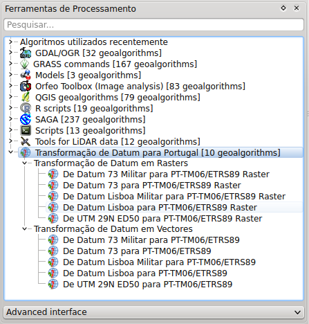

Tranformação de Datum para Portugal

Este módulo foi criado para facilitar a tarefa de transformação de dados vectoriais e raster em sistemas de coordenadas obsoletos (Datum 73, Datum Lisboa e ED50)
para o novo sistema de coordenadas oficial de Portugal Continental (ETRS89-PTTM06), utilizando o método das grelhas de tranformação de Datum (NTv2).
As grelhas suportadas são as disponibilizadas pelo Prof. José Alberto Gonçalves (UP) e pela Direção-Geral do Território (DGT):
Estas grelhas são instaladas automaticamente aquando da instalação do módulo, evitando-se dessa forma toda e qualquer
configuração manual por parte do utilizador. O módulo foi criado com o objectivo de simplificar ao máximo a utilização destas metodologias pelo utilizador.
Instalação
Para instalar este módulo deverá efectuar os seguintes passos:
- Abrir a janela de gestão e configuração de módulos
- Português: Módulos -> Gerir e Instalar Módulos -> Tudo
- Inglês: Plugins -> Manage and Install Plugins -> All
- Pesquisar por Portugal e carregar no botão de instalação do módulo

Utilização
Este módulo destina-se a ser usado dentro do Processing do QGIS. As ferramentas estão organizadas por tipo de dados (vector ou raster) e por
sistemas de coordenadas dos dados de origem (Datum 73, Datum Lisboa ou ED50).

Depois de seleccionar a ferramenta que deseja, o utilizador tem que simplesmente definir a camada de origem, a grelha NTv2 a utilizar e a camada de destino.

Notas
- O desenvolvimento do módulo foi suportado pelo Grupo utilizadores QGIS PT, tendo sido desenvolvido pelo grupo, pela NaturalGIS e Alexander Bruy
- Como qualquer outra ferramenta do Processing do QGIS, também estas ferramentas podem ser utulizadas em modalidade batch, tornando a tarefa de transformação
do sistema de coordenadas para conjuntos de dados grandes, uma tarefa muito simples e eficiente
- Repositório do código fonte: https://github.com/qgispt/processing_pttransform
- Bug tracker: https://github.com/qgispt/processing_pttransform/issues
- O módulo requer QGIS versão 2.4 ou master (a próxima versão 2.6) para funcionar.
- É necessário verificar que na pasta .qgis2/python/plugins não exista uma pasta chamada "processing". Se esta esxistir é necessário apagá-la antes de instalar a extensão.
Problemas conhecidos
- Nas ferramentas de transformação de raster há um bug conhecido no
QGIS 2.4, mas já resolvido no QGIS master: se a opção "open output file after
running algorithm" for activada, então o raster será carregado com o sistema de coordenadas
errado (o dos dados de input). Se este for carregado manualmente no QGIS o problema já não
se apresenta.
- Nalguns casos no QGIS 2.4 poderá aparecer um aviso (não um erro) sem uma aparente razão real: Layers do not all use the same CRS.
This can cause unexpected results. Do you want to continue?. Este aviso pode ser ignorado de momento e não está relacionado com o módulo.
À semelhança do bug anterior, também este já foi resolvido no QGIS master.
- Os paths dos ficheiros de input/output não devem conter caracteres especiais (espaços, acentos, tildes, etc.).
- De momento, as ferramentas de transformação de vectores apenas funcionam com ficheiros de entrada no formato Shapefile.